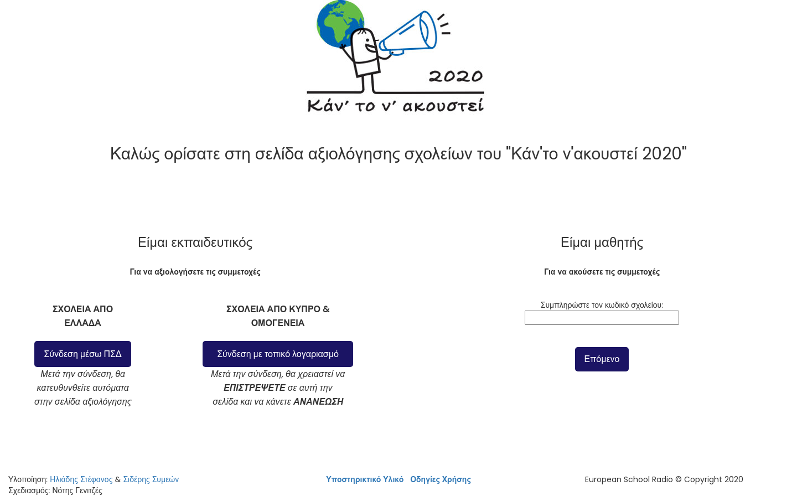
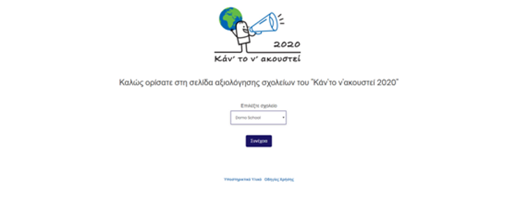
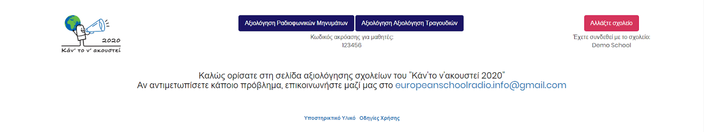
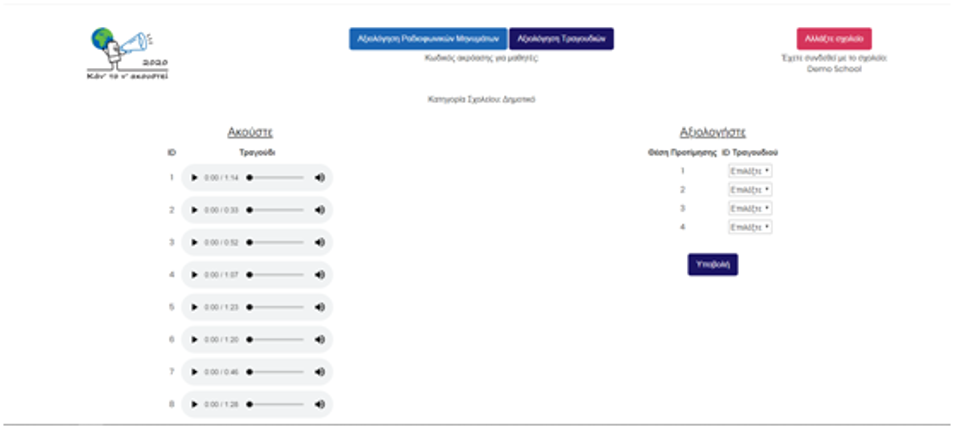
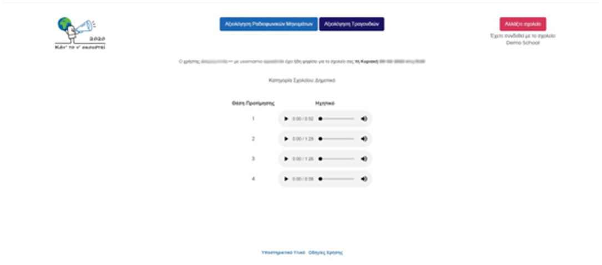
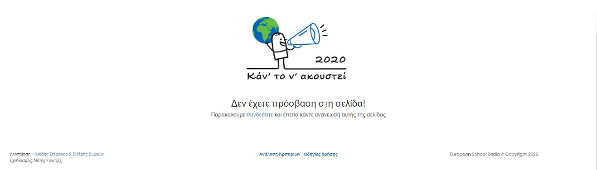
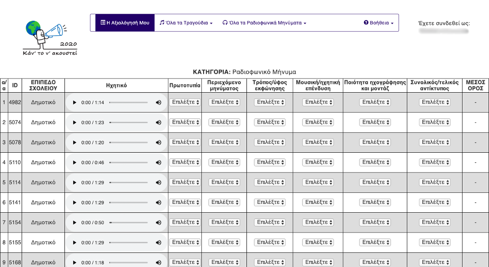

Κάντε scroll για να δείτε περισσότερα...







Πληροφορίες έργου
- Κατηγορία: Custom WebApp
- Πελάτης: European School Radio
- Ημερομηνία έργου: 01 Απριλίου 2020
- URL έργου: ιδιωτικό
- Εργασίες:
- § Κατασκευή custom web application
Σύστημα Αξιολόγησης Ηχητικών Αρχείων
Το συγκεκριμένο σύστημα αξιολόγησης κατασκευάστηκε με τις προδιαγραφές και τις απαιτήσεις που τέθηκαν από το European School Radio
Η υλοποίηση έγινε με php χωρίς κάποιο framework ή άλλη πλατφόρμα και περιλαμβάνει:
- Σύστημα Αξιολόγησης από σχολεία (πρόσβαση μόνο από καθηγητές)
- Απλή ακρόαση ηχητικών από μαθητές με ειδικό κωδικό ανά σχολείο (ο οποίος εμφανίζεται στους καθηγητές)
- Σύστημα Αξιολόγησης από Κριτές
- Οθόνη υπολογισμού και εμφάνισης αποτελεσμάτων (πρόσβαση μόνο από οργανωτική επιτροπή)
Υλοποίηση: Συμεών Σιδέρης & Στέφανος Ηλιάδης
Σχεδιασμός: Νότης Γενιτζές